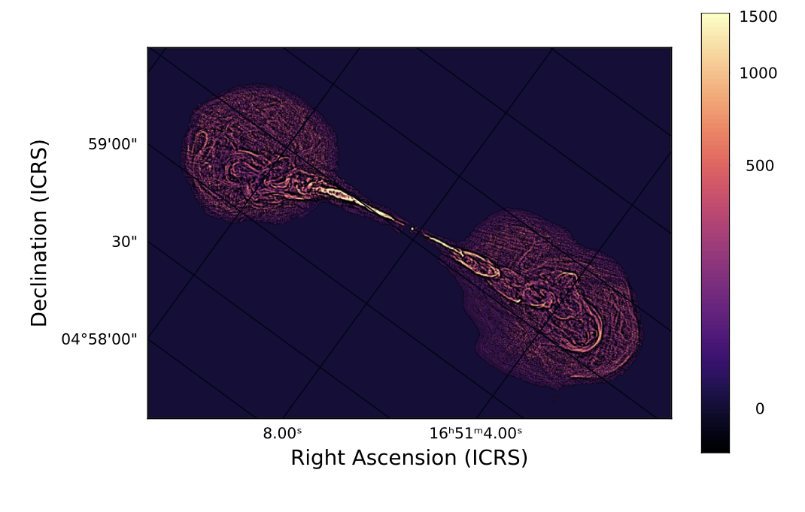

Octofitter is a large set of packages I created with the goal of advancing the current state of orbit fitting. Octofitter is built from the ground-up for extremely high performance and differentiable computing. Using Octofitter, challenging orbit models which previously would require hours or days, can now be sampled in seconds or minutes.
This speed enables researchers to approach their modelling tasks with a new level of rigour, and following a full Bayesian workflow. One can—in less than the time it used to take to run a single model—compare how different individual data points impact a fit, compare how priors affect the results, or even run full suites of simulated fits to anticipate how new data would impact findings.
Octofitter supports an even-growing list of kinds of exoplanet data. At present, these include:
PairPlots is a Julia and Python package for generating pair plots, also known as corner plots. Inspired by the very popular Python package corner.py, this package produces highly customizable visualizations to compare high-dimensional data e.g. Markov-chain monte carlo posteriors.
PlanetOrbits.jl is the calculation backend for Octofitter. It provides an easy interface to a large suite of different orbit calculations, and is fully auto-differentiable.
PlanetOrbits.jl supports many different kepler solvers with varying accuracies and number types (e.g. Float-16, Float-32, Float-64, and arbitrary precision). Bound and unbound (hyperbolic) orbits are supported.
AstroImages.jl is a package for loading and displaying FITS files, complete with support for world coordinate systems. It's very simple to use:
img = load("myfile.fits",1)
img["HEADER1"] = 1.0
img["HEADER1",/] = "comment 1"
imview(img, stretch=logstretch)

🐙